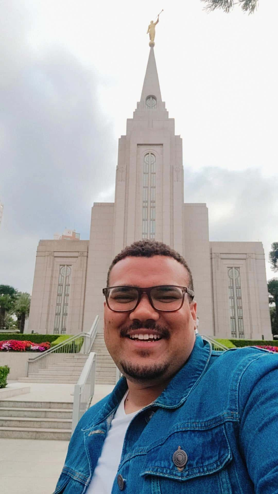

Gabriel Wallace Soares Dos Santos | WDD 130

Olá! Meu nome é Gabriel Wallace Soares Dos Santos e sou de São Paulo, Brasil. Eu gosto de sair com a minha esposa e fazer esportes, quando digo "esportes", é somente caminhada rs. Adoro estudar e aprender coisas novas, por isso comecei a estudar na BYU. Gosto de me reunir com meus amigos, e poder dar muitas risadas.
Tenho me dedicado bastante aos estudos de tecnologia e programação, pois quero desenvolver novas habilidades que possam abrir oportunidades profissionais no futuro. Estou animado com essa jornada de aprendizado na BYU e espero crescer tanto pessoal quanto profissionalmente ao longo do curso.
Nos meus momentos livres, também gosto de assistir filmes e séries, além de explorar conteúdos sobre tecnologia e desenvolvimento web. Acredito que aprender de forma contínua é essencial, e por isso tento sempre praticar o que estudo no dia a dia, mesmo que seja em pequenos projetos ou exercícios simples.